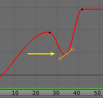
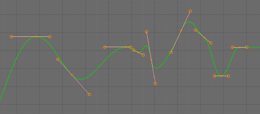
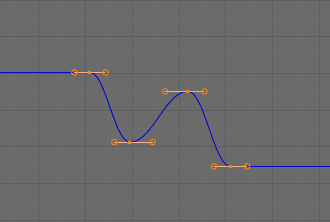

简介¶
After animating some property in Blender using keyframes you can edit their corresponding curves. When something is "animated", it changes over time. This curve is shown as something called an F-curve. Basically what an F-curve does is an interpolation between two animated properties. In Blender, animating an object means changing one of its properties, such as the object's location, or its scale.
如前所述，Blender的基本时间单位是“帧”，通常仅持续几分之一秒，具体取决于场景的 帧率 。由于动画是由跨越多个帧的增量变化组成的，通常这些属性是 不是 手动 逐帧 修改，因为：
- 这将需要很长时间！
- 要获得属性的平滑变化将非常困难（除非你计算数学函数并为每个帧入一个精确的值，这将是非常疯狂的）。
这就是为什么几乎所有直接动画都是使用 插值 完成的原因。
这个想法很简单：你定义了几个关键帧，这些关键帧是由多个帧分开的。在这些关键帧之间，属性值由Blender计算（插值）并填充。因此，动画师的工作量显着减少。
插值示例。
例如，如果你有：
- 在帧0处的值为0的控制点,
- 第25帧的另一个值为10,
- and you use linear interpolation, then, at frame 5 we get a value of 2.
The same goes for all intermediate frames: with just two points, you get a smooth increase from (0 to 10) along the 25 frames. Obviously, if you would like the frame 15 to have a value of 9, you would have to add another control point (or keyframe)...
时间的方向¶
Although F-curves are very similar to Bézier, there are some important differences.
For obvious reasons, a property represented by a curve cannot have more than one value at a given time, hence:
- 将控制点移到先前位于移动点之前的控制点之前时，两个控制点将在编辑后的曲线中切换其顺序，以避免曲线时间上逆转。
- For the above reason, it is impossible to have a closed F-curve.

在第二个关键帧之前移动。 |

在第二个关键帧后移动。 |
设置¶
F曲线有三个附加属性，它们控制点之间的插值，扩展行为和手柄类型。
插值模式¶
参考
| 菜单: | |
|---|---|
| 快捷键: | T |
模式适用于在当前帧和下一个关键帧直接 插值 （插值）。
插值类型¶
- 常值
根本没有插值。该曲线保存其最后一个关键帧的值，给出离散（阶梯）“曲线”。通常仅在姿势至姿势动画工作流程的初始“blocking（闭塞）”阶段使用。

常值。
- 线性
这种简单的插值创建了一个直线段，给出了一条不连续的线。仅使用两个关键帧和 外插 扩展模式可以很容易地获得无限的直线（即线性曲线）。

线性。
- 贝塞尔
更强大和有用的插值，以及默认的插值。它给出了很好的平滑曲线，即平滑的动画！
贝塞尔。
Note
Remember that some F-curves can only take discrete values, in which case they are always shown as if constant interpolated, whatever option you chose.
缓动（通过强度）。¶
Different methods of easing interpolations for F-curve segment. The "Robert Penner easing equations" (basically, equations which define some preset ways that one keyframe transitions to another) which reduce the amount of manual work (inserting and tweaking keyframes) to achieve certain common effects. For example, snappy movements.
- 线性
- 正弦曲线形
- 二次方型
- 三次方型
- 四次方型
- 五次方形
- 指数型
- 圆状型
See also
有关更多信息和一些现场演示，请参阅 http://easings.net 和 http://www.robertpenner.com/easing/
动态效果¶
These additional easing types imitate (fake) physics-based effects like bouncing/springing effects. The corresponding settings can be found in the .
- 弹性
指数衰减的正弦波，像弹性带。这就像把一根僵硬的杆子固定在某个表面上，看着它反弹并回到原来的状态。
- 振幅
- 幅度属性控制振荡从基本曲线发散的强度。在0.0时，没有振荡（即，它只是像极端指数转变那样快速对准B值），并且在1.0处出现类似于图标中所示的轮廓。
- 周期
- 周期属性控制振荡发生的频率。较高的值导致更密集的振荡。
- 反弹
- 指数衰减的抛物线反弹，就像物体碰撞时一样。比如弹跳球等。
- 后退
三次方缓动用于最大偏差（过冲）和降低编差。当你想要进入下一个关键帧的时候有一点过冲，或者可能是为了一些结束预测的时候使用这个。
- 后退
- 后退属性控制过冲的大小和方向（即高于/低于曲线）。
缓动类型¶
参考
| 菜单: | |
|---|---|
| 快捷键: | Ctrl-E |
缓动类型控制宽松效果适用的两个关键帧之间的段的结束一端。
- 自动缓动
- 使用以下行为中最常见的预期。对于过渡效应，淡入 这基本上是易于理解，而物理效应则是 淡出 。
- 渐入
- 效果会积聚到第二个关键帧。
- 淡出
- 效果从第一个关键帧淡出。
- 淡入淡出
- 段两端都有效果。
外插模式¶
参考
| 菜单: | |
|---|---|
| 快捷键: | Shift-E |
外推定义了曲线在第一个和最后一个关键帧之前的行为。
有两种基本的外推模式：
- 常值
默认的，在它们的第一个关键帧之前以及在它们的最后一个关键帧之后有一个常数值（这是第一个和最后一个关键帧中的一个）。
常值外推
- 线性
曲线末端是直线（线性），由其前两个关键帧（分别是它们的最后两个关键帧）定义。

线性外推
Additional extrapolation methods (e.g. the Cycles modifier) are located in the F-Curve Modifiers.


{kind=link}
{kind=link}
{kind=link}
{kind=link}